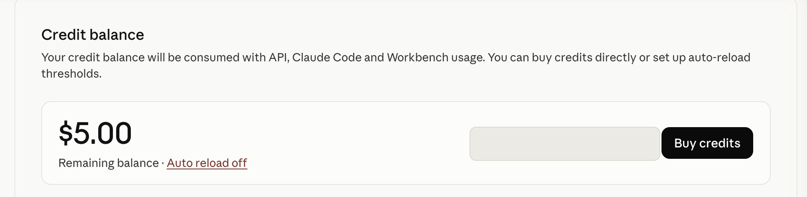
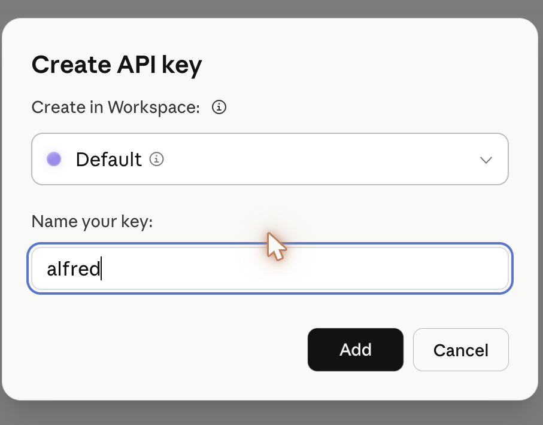

welcome
let's get you set up.
about 15 minutes. do it in one sitting if you can — each step builds on the last.
before you start, have these ready
- ▸a Mac on macOS 13 or lateralfred runs locally on your machine.
- ▸about 10 minutes and an Anthropic accountwe'll help you make one — it's free to start, and ~$5 of credit covers weeks of use.
- ▸the accounts you want alfred to watchGoogle Calendar and Notion, signed in and handy.
what you'll do
- 1get your Anthropic keythe brain that powers alfred.
- 2download & install alfreda quick drag into Applications.
- 3connect your worldfinished inside the app.
step 2 · your anthropic key
the brain, once.
this powers alfred's thinking. you create it once, paste it once, done. follow these in order.
create an Anthropic account
sign up with the email you use most. if you already have one, just sign in.
open console.anthropic.com ↗add a little credit
go to Billing → Add credits. $5 is plenty to start — alfred uses pennies a day.

create a key
go to API keys → Create Key. name it alfred so you remember what it's for.

copy it now
it starts with sk-ant-. you won't be shown it again, so copy it somewhere safe for the next few minutes.
step 3 · download & install
get alfred.
a 4 MB download, then a quick drag into Applications.
- open the file you just downloaded.
- drag alfred into Applications.
[ looping gif: dragging Alfred.app into the Applications folder ]
- open alfred from your Applications folder.
you're almost there
setup continues in the app.
alfred is now walking you through the rest — your key, full disk access, messages, calendar and Notion. it ends with your first briefing.